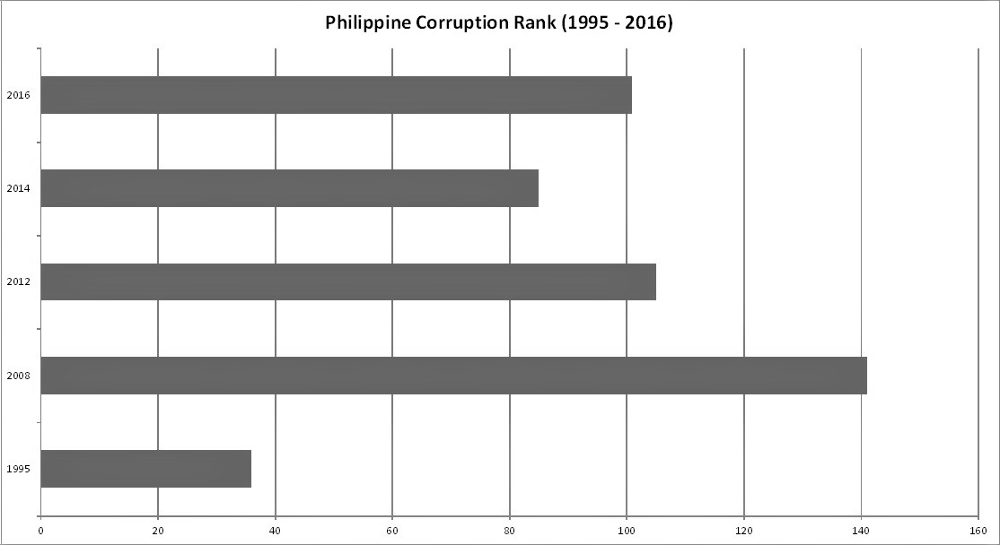

WHAT IS CORRUPTION?
Corruption is an action committed by officers in the government by abusing the powers that was entrusted to them by the people. It is usually the cause of poverty, which eventually leads the people to think that the country’s political and economic system is unreliable and cannot be trusted.
SOME CAUSES OF CORRUPTION
JEALOUSY
People always want something, something better, bigger than what others have, jealousy. People tend to go to where their satisfactions are satisfied, being self-centered. They always want to be on top of everyone, having the power. Without having the mentality of who and for what you are serving for, there will always be corruption, and we will never alleviate it.
SLOW PACE OF JUSTICE
Immediate process are needed in our justice system to have profound effect. It will be irrelevant when the dispute of sentence due is late to its incapacity to provide solutions within the time-frame. The crime committed is nearly forgotten, by the time the sentence is out. Justice needs honest and guaranteed processes, but not if it is slowing down the processes in the administration of justice.
LACK OF REGULATIONS AND IMPLEMENTATIONS
A persons feeling undervalued and not paid correctly cause corruption in public service. This then leads to that person feeling the right to get what is not his to compensate for that feeling of undervaluation. Lack of regulations and implementations regarding the fight for corruption may also be a cause of it since it merely encourages people to be corrupt with the mindset that they will get away with it.
GREED
One of the most recognizable cause of corruption is greed. People seek power, wealth, fame and attention for their own interest. They want supremacy, control and the largest part on everything. We cannot deny that when we experience power and fortune, we tend to enjoy it and we tend to abuse it. The more we have it, the more we want it. The more we want it, the more we seek for it, and the more we seek for it, the more we find ways to gain it. It’s already our nature as human beings that we never get contented. We always seek for more, and we always work for more.We should be reminded that the more power and wealth we experience, the more vulnerable we are to temptations. We might come into a point where we do something for our self and it causes the expense of others.
Greed is very powerful. It drives us to do something in order to gain and achieve what we want. It makes us invulnerable to fear. It makes us happy by awarding us with the satisfaction of knowing that we have more than what we need. It makes us very competitive by pushing us to gain more than what other people has. It tells us that we should go above and beyond other people’s level. It makes us believe in our self and be confident on our own knowledge and opinion, it teaches us not listen to others. Greediness is very powerful. It kills dreams, it kills hope, it kills self-respect, and it kills futures. Greed fuels evil desires. It feeds selfishness. And it starts corruption.
THE THREE TYPES OF CORRUPTION
Corruption is very rampant and we would always like to get rid of this problem, but whenever we do issue this problem, we may face dangerous situations.
It’s sad to say that our country was once one of the top countries in Asia that has economic power, and look at us now. Corruption is one of the major problems in our country. It’s evident that even if government tells us that they are not corrupt, we can still feel it and that we can even see it happening in our everyday lives and it drags our country down. Low-quality roads, schools, hospitals, and other public facilities, and even wealthy government officials.
Abuse of Power and Authority
Corruption is not just tied to governments stealing the people’s money for their own personal wealth; it can also be abuse of power and authority bestowed upon them. The civil code of the Philippines Principle of Abuse or Rights Article 19 even states that “Every person must, in the exercise of his rights and in the performance of his duties, act with justice, give everyone his due and observe honesty and good faith.” This means that we are all subjected to practice this principle, both us, the people, and the politicians seated in the government.
Tax Evasion
Tax is also one cause of corruption in our country and sometimes government evades this. Our tax is supposedly for the public, meaning everyone in the country is included. Tax is supposedly good for the country, since it’s our ways and means of making our country better, but since there are people who are tax evaders, government misusing our tax, until this day, how can we even make our very own country better? Sometimes tax can even be too high for the average person, which can lead to poverty.
Government Misbehaviors
Our time can also be corrupted by the government. Time is precious and as many of us would say, “Time is money.” Projects that was planned by the government, especially buildings and roads and there specifications such as the time it should be finished are sometimes not given to us. Implementing these projects sometimes takes a very long time that should’ve been finished for just a short period of time and this can cause lots of money.
Corruption is a very hard topic to talk about, but when I put myself into the shoes of those having a difficult time dealing with this problem, it really saddens me to see that our country is not excelling with this kinds of situation. We should not be afraid to put the big cases to the court. We should always remember that if we do want to make our country a better place, it is us who has the voice. We need to devise our systems and use our laws fairer. We need to fill the gap between the people and the government. Although we have a long way to probably achieve this goal, but it is never too late to make a change and make a difference.
THE IMPACT OF CORRUPTION
The Philippines; Our nation, known for its beautiful beaches, hospitable people, and diverse natural resources. To those looking for a cheap place to travel, this is the destination. Our country has great potential. However, there is more to what lies beyond the surface. Millions of Filipinos suffer from corruption every day. Year after year, we ask: when will poverty be alleviated? One of the big factors that contributes to poverty in Philippines is corruption, a problem that doesn’t seem to end. Because of these corruptions, funds are getting short for health, education, agriculture, and other important matters. Poverty in the Philippines seems to be a normal thing. Seeing men, women, and children living in the slums as we go to work or school has become a normal sight to our eyes.
According to a 2014 report by Global Financial Integrity, the Philippines lost about $410.5 billion between 1960 and 2011 on illicit financial flow. In current exchange rates, the amount is about P19.34 trillion (without accounting for inflation). The vast majority of money flowing illegally into and out of the Philippines over the 52-year time span was done mostly through misinvoicing of trade. In effect, the P19.34 trillion lost to corruption could have been used for education, health or infrastructure. What happened to the Pearl of the Orient Sea? We have wasted so many years trying to make a change and yet nothing has happened. Each administration has been nothing but failure and more issues about corruption. It saddens me, as an individual of the youth that my parents and all other employees like them, have to pay taxes and see not progress at all.
We, as Filipino citizens, live in a country where deception and lies prevail. For those who are part of the Class E or people who reside in squatter areas, these numbers do not mean anything to them. They have been so used to this kind of lifestyle, that it has become comfortable. Although, the thought of being better off isn’t gone, they have accepted the truth.
CORRUPTION, A DISEASE.
The world has been being infested by the biggest disease, corruption. A vast loss of money is one of the greatest problem faced by the people. It has engrained hopelessness and discouragement and threatens the strength of loyalty that has been built through century. The people start to disregard the accused involved in the corruption by negatively thinking about them. But when they work together they will again approach them by thinking that they would have benefits provided. People build distrust towards officials. Lower officers are dishonest and disrespectful to their higher up. The lower grade officer may not obey the orders of higher grade officers.
Constitutional republic is a type of government which officers are elected. The people elected the official were based on their belief in them. But when they found that officials are involved in corruption people may lose faith in them.
BE THE CHANGE
Have you encountered a student paying his teacher just to have a higher grade? Or, in a company that only uses their officers to to manipulate their positions for their personal gains? All of these are example of corruption. What is the first thing that comes into your mind when you see the word corruption? Of course, all of us has this thought of political corruption as what we’ve seen and experienced in our daily life. But, what is the real meaning of corruption? It has many different meaning for us. Corruption is an unconscionable advantage, profit or gain of injustice through the abuse of authority and power (Ubani, 2016). In other words, it is the misuse of an entrusted power for private or personal gain. It is not healthy for a country to have corruption. Is corruption bad for humans? Yes, because it violates the right of being a moral human person, and it makes justice corruptible. It affects people, society and the economy. People will have lack of quality in service, and justice will no longer be experienced by many. Society may become weak because of the frustration, apathy and lack of trust in the rulers. People may not even respect the officials of the government. Corruption also discourages people to work together in common good. It demands bribery, social inequality, poverty and insecurity. While in economy, it has a great possibility that the foreign investments will decrease. It leads to the depletion of national wealth, and unbalanced economic development. How can we avoid corruption? The first tool is “education.” We must be educated to be aware and understand what corruption is, and to fully know our rights as a human being. Also, we need to reform the government process and finance management. Promoting transparency, openness and professional accountability is also one of the solution. And lastly, empower the citizens. Our voice is the powerful tool that can help this corruption to vanish. Building up citizen’s demand for anti-corruption and to strengthen their will to hold the government’s accountable is a sufficing approach for a better mutual understanding between the locals and the government. Being a voice to others, one should build up the strength to fight against corruption and to never allow yourselves to fall into dirty deeds. For those who are already within the grasp of dirty deeds there is still a chance to fight the conflict within yourself. Just like in the song of a legendary icon, michael jackson’s man in the mirror, start with the man infront of the mirror, start the change within you and then goodness will follow to those who believe. Now, be the change!
STATISTICS
The graph shows that the Philippines was once a country where corruption wasn't that much of an issue, but is still present in the country. As time progresses after 1995 where the Philippines ranked 36 overall out of 175 countries; corruption began to rise and become a problem of the country until 2008 where it was ranked 141 the highest corruption rank the Philippines experienced. Thankfully after 2008, our global rank for corruption began to drop down until 2014 when it ranked 85, although it might still be high for some, at least the country saw a glimpse of good governance during that time frame. It began to rise again after 2014. And as of 2016, the Philippines ranked 101.
http://www.globalsecurity.org/military/world/philippines/corruption.htm
http://www.tradingeconomics.com/philippines/corruption-rank
http://newsinfo.inquirer.net/759557/ph-slips-in-global-corruption-index-report
WHO ARE WE?
We are a group of 3rd year Bachelor of Science in Computer Science students from Saint Louis University raising an advocacy and awareness campaign avout good governance. We would want to let the citizens of the Philippines know that there is something wrong with our societal and governmental system and would like to give the people some information about what's going on around us so that we can combat and alleviate the problems causing our country to degrade overtime.

Shary Gayle Chakas
Raphael Abaya
Jason Paul Dadula
Rio Vann Kolodzik
John Derick Liwanag